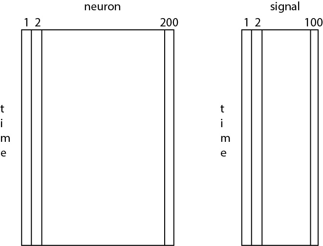

Identifying meaningful patterns and relationships within noisy data is a fundamental component of neuroscience research; however, multiplicity - the practice of conducting multiple simultaneous comparisons - can result in spurious and misleading conclusions. Alternatively, strict approaches to correct for multiplicity can result in missed scientific conclusions. In this unit, learners will understand how multiplicity occurs, its impacts, and strategies to address it.
1 - Why mitigate multiplicity?
In science, it’s common to test data in multiple way. We might use our data to test multiple theories or we might test multiple features of data collected from a novel device.
After doing so, we often want to make confident statements about these test results. It’s then important to deal with the challenges of multiplicity.
There are (at least) two common mistakes when confronting multiplicity:
Too lenient. If we do nothing about multiplicity in our results, then we might confuse spurious results occurring by chance with meaningful scientific conclusions.
Too strict. If we strictly address multiplicity, then - in our quest to avoid false positive results - we might disregard meaningful scientific conclusions.
Unfortunately, no one-size-fits-all solution exists to address multiplicity. For your data and your results, you’ll need to make an informed decision.
Our goal in this unit is to practice making these decisions to address multiplicity, and explore the impact of being too lenient or too strict.
2 - Rat brains, position, and profit: an introduction to mitigating multiplicity
The first suspicious scenario
Consider the following data mining scenario:
A research group inserts tiny electrodes into a rodent brain and records the activity of individual neurons while the rat walks, eats, drinks, grooms, and sleeps.
The researchers collect data from 76 neurons and then, from these 76 neurons, chooses 8 to analyze.
The researchers report a handful of observations from the selected 8 neurons, such as how different neurons respond (i.e., generate action potentials) during some of the rat’s different behaviors (e.g., during walking, during grooming).
Approximately how many tests did these researchers perform?
Is this “good” scientific practice? Does anything concern you?
A second suspicious scenario
Consider this press release from another data mining scenario:
EXTRA! EXTRA! RAT BRAINS CRACK THE STOCK MARKET CODE!
In a dazzling demonstration of rodent ingenuity—or perhaps sheer luck—researchers have harnessed the firing neurons of rat motor cortices to predict movements in the U.S. stock market. That’s right, folks! A team from Michigan and Georgia linked rat brain activity to Wall Street ticker tapes, proving that whiskers may rival Wall Street wits. By monitoring the firing rates of 94 neurons across three rats, these scientists uncovered correlations between neural activity and the daily closing prices of stocks on NASDAQ, the NYSE, and the American Stock Exchange. The Coca-Cola stock price, for instance, danced in sync with the neurons like Fred and Ginger at the Ziegfeld Follies.
But wait, there’s more! The researchers didn’t stop at finding patterns — they dove headfirst into the trading floor with a predictive model based on neural firing rates. Rats’ neural spikes gave the orders: buy, sell, or hold. And the results? An impressive 43% increase in a simulated portfolio value, turning an initial $1,000 investment into a snappy $1,435 over just 20 trading days. Forget the contrarian strategies of hedge fund honchos—our furry friends seem to have cracked the code.
And here’s the kicker, folks: this isn’t just about making a buck. The findings suggest a mysterious connection between rat neural activity and human economic behavior. The researchers propose a grand theory linking the creatures of Earth to the ebbs and flows of societal urges, tying their work to theories like Gaia’s interconnected organism hypothesis. So, the next time someone says, “it’s a rat race out there,” remember—they might just be running the show!
So, what do we believe?
Using noisy data recorded from rodent brains, the two scenarios above report relationships between:
the brain’s neural activity and rodent behavior, and
the brain’s neural activity and the stock market.
You might be (reasonably) skeptical. How could neural activity from a rat brain possibly predict so many different things?
In what follows, we’ll investigate this question with the goal of confronting the challenge of multiplicity.
When data mining, the number of relationships between the things you observe increases quickly with the number of observed items. To get a sense for this, consider observations from N neurons (e.g., spiking activity) and M signals (e.g., stock prices). How many possible combinations of relationships exist between the neurons and signals?
In the second suspicious scenario discussed above, activity from 94 neurons was compared with activity from 4195 stocks. How many possible combinations of relationships exist between the neurons and stock signals?
2 - Visualization, our first analysis step
Motivated by these previous scenarios, you receive data from a collaborator interested in understanding the relationship between neural activity in the rodent brain, a measure of rodent behaviors (e.g., measures of the rodent’s position, movement speed, head angle, etc.), and stock prices on the NYSE. The data consist of the following information:
spikes - the action potentials (or “spikes”) generated by 200 neurons,
signals - the rodent position (one of the signals) and the price of 99 stocks.
Both the spikes and signals are recorded simultaneously, every 10 ms for 0.5 s, resulting in a total of 500 time points.
Code
import numpy as npimport matplotlib.pyplot as pltimport statsmodels.api as smimport requests# Load custom functionsurl ="https://raw.githubusercontent.com/Mark-Kramer/METER-Units/refs/heads/main/exploratory_functions-SHORT.py"response = requests.get(url)exec(response.text)spikes, signals, t = load_data()print(response.text)
import scipy.io as sio
import numpy as np
import matplotlib.pyplot as plt
import statsmodels.api as sm
from tqdm import tqdm
def load_data():
import pandas as pd
df = pd.read_csv("https://raw.githubusercontent.com/Mark-Kramer/METER-Units/refs/heads/main/rodent_data.csv")
spikes = df.iloc[:, 0:200].to_numpy()
signals = df.iloc[:, 200:300].to_numpy()
t = df.iloc[:, 300].to_numpy()
return spikes, signals, t
def plot_spike_train(t, spikes):
indices = [i for i, value in enumerate(spikes) if value == 1]; values = [1] * len(indices)
plt.plot(t[indices], values, 'ko');
def compute_p_values(spikes, signals):
n1 = signals.shape[1]
n2 = spikes.shape[1]
p = np.zeros((n1, n2))
for i in tqdm(range(n1)): # tqdm shows the progress bar
for j in range(n2):
# GLM fitting with a Poisson family
X = signals[:, i] # Predictor variable
y = spikes[:, j] # Response variable
X = sm.add_constant(X) # Adding a constant column for the intercept
glm_model = sm.GLM(y, X, family=sm.families.Poisson())
glm_results = glm_model.fit()
p[i, j] = glm_results.pvalues[1] # Storing the p-value of the predictor
return p
def fdr(p):
# List of p-values
p_values = p.flatten()
# Desired false discovery rate level
q = 0.05
# Sort p-values and get the sorted indices
sorted_indices = np.argsort(p_values)
sorted_p_values = p_values[sorted_indices]
# Number of multiple tests
m = len(p_values)
# Calculate the Benjamini-Hochberg critical values
critical_values = (np.arange(1, m+1) / m) * q
# Find the largest p-value that is smaller than the critical value
max_significant = np.max(np.where(sorted_p_values <= critical_values))
# Initialize a boolean array for significance
is_significant = np.zeros(m, dtype=bool)
# If any p-values are significant, set them as True
if max_significant >= 0:
is_significant[sorted_indices[:max_significant+1]] = True
# Make matrix to indicate significant p-value after FDR.
p_values_signficant_after_FDR = np.zeros(np.shape(p))
np.shape(p_values_signficant_after_FDR)
p_values_signficant_after_FDR[np.unravel_index(np.where(is_significant==True), np.shape(p))] = 1
return p_values_signficant_after_FDR
We’re interested in understanding the relationship (if any) between spikes and signals.
Let’s start by investigating the structure of the data.
Code
print(spikes.shape)print(signals.shape)
Both spikes and signals consist of 500 time points (the number of rows). We collect data from 200 neurons and 100 signals (the number of columns).
You might think of these variables as rectangles (or matrices), where each row indicates a time point, and each column indicates a neuron or signal:

title
Let’s plot the data from one neuron in spikes:
Code
# Plot the spiking from an example neuron.plt.figure(figsize=(12, 2))plot_spike_train(t, spikes[:,0]) # Plot the first spike train.
How do these data represent “spikes”?
Let’s also plot the data from one signal in signals:
Code
# Plot the spiking from an example neuron.plt.figure(figsize=(12, 2))plt.plot(t, signals[:,0]);
What features do you notice in the signal?
To more directly compare the spikes and signals, let’s plot one atop the other:
Code
plt.figure(figsize=(12, 2))plt.plot(t, signals[:,0]);# Plot the first signal.plot_spike_train(t, spikes[:,0]) # Plot the first spike train.
Compare the plots of example spiking and an example signal. Are they related?
We’ve used visual inspection to compare the spike train from one neuron (the first column of spikes) and one signal (the first column of signals). We didn’t see an obvious relationship. However, there are many more relationships to compare. Repeat this analysis to compare each spike train (columns 1 to 200 of spikes) with each signal (columns 1 to 100 of signals). Do you observe any relationships?
Alert: We can’t use visualization alone!
There are 200 neurons and 100 signals, resulting in 20,000 pairs to consider.
We can’t possibly visualize all of those.
Instead, we need to perform statistical tests.
3- Profit! Rat brains for high-frequency trading in the NYSE
Let’s now investigate the pairwise associations between the spiking of 200 neurons in the rat brain, the rat position, and 99 stock prices.
We have 200 neurons and 100 signals. How many possible combinations of relationships exist between the neurons and signals?
To compare the spikes and signals, we perform a statisitcal test of the association between each pair of data. There are many choices you could make to assess the associations and perform the statistical tests. We will not investigate those choices here. Instead, we will perform a sophisticated - yet standard - approach to assess the relationship between the spikes and signals; if you’re interested in (many) more analysis details, check out this link.
Again, for our purposes, the details of the test are not important.
What is important is that each test produces a p-value and we interpret small p-values to indicate statistically significant associations (link to Unit:“Putting the p-value in Context”).
Let’s compute those p-values now. This step is slow, because there are many p-values to compute!
Code
p = compute_p_values(spikes, signals)
100%|██████████| 100/100 [00:29<00:00, 3.37it/s]
For each neuron-signal pair, we estimate the association with an associated p-value.
What do you observe? Can you find the meaningful relationships between neurons and signals, if any?
To isolate meaningful relationships, let’s count the number of associations in which p<0.05, the standard threshold for signficance applied in practice (link to Unit:“Putting the p-value in Context”).
Code
np.sum(p <0.05)
1104
Interpret this result. What do you conclude about the data?
Conclusion:
Rat brain neural activity seems to be associated with stock prices and the rodent’s position!
Let’s develop a new strategy for profitable high-frequency stock trading using rat brain neuron spiking.
Reflection:
Hmm, there are a lot of significant relationships - this was so easy!
Why doesn’t everyone use rat brain activity to predict the stock market?
Alert: Wait, this doesn’t make sense!
How can the spike timing in a rat brain relate to stock market prices?
We’ve conducted many (20,000 in fact) statistical tests and identified all associations with p<0.05 … Is that the right choice?
4- Not so fast … finding meaningful relationships after you’ve tested everything.
In the previous section, we assessed associations between 200 neurons and 100 signals.
This exploration led to many (20,000) statistical tests.
When we compute so many tests, we need to correct for multiplicity.
Important fact: When conducting multiple hypothesis tests, increased error rates occur because each test has a chance of incorrectly rejecting the null hypothesis (a false positive). This error, typically called the Type I error, is the probability of a single test falsely claiming a statistically significant effect.
As more tests are performed, the cumulative probability of committing at least one Type I error across all these tests increases, leading to an overall higher error rate for the set of tests than for any individual test. This phenomenon is often referred to as the “multiple comparisons problem” or “multiplicity.”
To mitigate multiplicity in our analysis, we must account for increased error rates due to conducting multiple hypothesis tests on the same dataset.
In our initial analysis, we found all p-values < 0.05. If we want to talk like a statistician, we’d say: We chose a Type I error rate (\alpha) of 0.05.
This means that each test has probability 0.05 of falsely claiming a statistically significant effect.
We performed 20,000 total tests. How many false statistically significant effects do we expect?
Intuition building aside
Imagine you have a fair coin and you flip it a few times. Let’s think about what happens …
Flip 5 coins. Are you likely to get all heads?
Now, ask 1000 people to repeat this 5-coin-flip process. Do you think someone will get all heads?
Many methods exist to correct for multiplicity. In this unit, we’ll investigate a couple of these methods.
To start, let’s apply one of the most popular procedures to correct for multiplicity: the Bonferroni correction.
The Bonferroni correction reduces the Type I error rate by dividing the desired overall significance level (\(\alpha\)) by the number of tests performed (call it \(m\)). For example, if a trial is testing \(m = 20\) hypotheses with a desired overall \(\alpha = 0.05\), then the Bonferroni correction would test each individual hypothesis at \(\alpha = 0.05/20 = 0.0025\).
The Bonferroni test is considered conservative because it adjusts the significance level \(\alpha\) by dividing it by the number of comparisons. Doing so reduces the risk of Type I errors (false positives) but increases the likelihood of false negatives (i.e., incorrectly labeling a significant relationship as not significant).
Compute the Bonferroni correction using our desired overall significance level (\alpha = 0.05) and the number of tests performed.
Let’s apply the Bonferroni correction to our matrix of p-values (p) and determine the number of significant associations, after correcting for multiplicity.
Code
np.sum(p <0.05/20000)
0
Interpret this result. What do you conclude about the data?
Alert: Wait, this doesn’t make sense!
Much work (including Noble Prize work) has established a relationship between rat neuron spiking and rodent position.
We’ve identified all associations with p<0.05 after Bonferroni correction … and there aren’t any.
Is that the right choice?
5- Rat brains either predict many things or no things?
We’ve applied two strategies to confront multiplicity in our analysis:
Do nothing (Unit 3)
Bonferroni correction (Unit 4)
The two strategies give completely different results. Either neurons in the rat brain spike with many associations to observed signals (Unit 3) or no associations (Unit 4). And, neither result makes sense when compared to the existingliterature. So, now what?
Again, many strategies exist to correct for multiplicity. There’s no single “right” approach.
Our first approach (do nothing) is too lenient - we allow two many false positives. And, in doing so, we draw a ridiculous scientific conclusion: action potentials in the rat brain predict prices on the stock market.
Our second approach (Bonferroni correction) is too strict - we allow too few false positives. And, in doing so, we find no evidence for a well-established scientific conclusion: action potentials in the rat brain encode the rodent’s position.
Perhaps we can find an intermediate approach, that allows neither too many nor too few false positives …
In what follows, you can explore alternatives to our choices above, and see how these choices to address multiplicity impact your results.
Choose your own adventure!
False Discovery Rate or FDR (go to Unit 6)
Split the data (go to Unit 7)
6- FDR: a less conservative approach to multiplicity.
You’ve chosen one approach to mitigate the impact of performing multiple statistical tests: calculate the False Discovery Rate (FDR).
To do so, we’ll use the Benjamini-Hochberg (BH) procedure. The BH procedure is a statistical method to control the false discovery rate (FDR) in multiple hypothesis testing. It ranks the p-values from smallest to largest and compares each to a threshold that increases with rank, defined as \((r/m) \cdot q\), where \(r\) is the rank of the p-value (i.e., the p-values position when ordered from smallest to largest), \(m\) is the total number of tests, and \(q\) is the desired FDR level, which is the expected proportion of false positives among all rejected hypotheses. For example, if \(q = 0.05\), it means that, on average, no more than 5% of the rejected hypotheses are expected to be false positives. This allows for a controlled balance between identifying true effects and limiting false discoveries in multiple hypothesis testing.
The BH procedure is less conservative than methods like Bonferroni correction, offering more power while maintaining control over the expected proportion of false positives.
The BH procedure is implemented in three steps:
Assign each p-value a rank, \(r\), where the smallest p-value has rank \(r=1\), the next smallest has rank \(r=2\), and so on.
Calculate the critical value for each p-value using the formula:
\(CriticalValue =(r/m) \cdot q\)
where \(m\) is the total number of tests, and \(q\) is the desired overall significance level (typically 0.05 for 5% FDR).
Compare each p-value to its corresponding critical value. The largest rank, \(r\), for which the p-value is less than or equal to the critical value is considered significant, and all p-values with ranks less than or equal to this \(r\) are considered significant. In other words, we reject the null hypothesis for all p-valyes with ranks less than or equal to \(r\).
To build some intuition for these steps, let’s start with a simple example.
Consider an experiment in which you perform 5 hypothesis tests (\(m=5\)) and collect 5 p-values:
p-value: [0.1, 0.12, 0.001, 0.03, 0.045]
We conducted 5 tests, and decide to correct for multiplicity.
Let’s use the p-values to perform each step of the Benjamini-Hochberg procedure.
To start, order the p-values from smallest to largest.
Then, perform Step 1. Assign each p-value a rank.
Next, perform Step 2. Calculate the critical value.
Perform Step 3. Compare each p-value to its corresponding critical value.
In this illustrative example, we found two p-values are considered significant using the FDR procedure. What would you find if you instead used a Bonferroni correction?
Now, having built some intuition for computing the FDR using the Benjamini-Hochberg (BH) procedure, let’s apply it to our data of interest.
It’s the same idea, but instead of considering 5 p-values, we must consider the 20,000 p-values.
Code
p_values_signficant_after_FDR = fdr(p)
The function fdr returns whether each p-value in p remains signficant after correcting for multiplicity using FDR.
Let’s display the p-values that remain significant after correcting for multiplicity using FDR:
Examine the figure above. Do you see any dots, indicating significant relationships between neurons and signals after correcting for multiplicity using FDR?
Interpretation:
We originally corrected for multiplicity using the Bonferroni correction. Following this strict correction, we found no evidence of significanet associations spikes and signals.
After correcting for multiplicity using FDR, we now find some neurons in the rat brain are associated with the some signals.
We return to our collaborators and they confirm that Signals 0-10 corresponds to different measures of the rodent’s position and direction.
Relief
We’ve corrected for multiple comparisons using FDR and find a sensible result.
The results are consistent with the existing theory that neuron’s in the brain encode rodent position.
We find no evidence that neurons in the rodent brain predict stock market prices.
Using a less strict correction (FDR instead of Bonferroni) we identify significant associations in the data.
7- Split your data to test your conclusions.
(Pending: describe how you can split your data in half to test your conclusions. You take the first half of your data and epxlore. Find the significant relationships. Then test those relationships in the second half.
(Use first half of data, in time)
Code
T = np.shape(spikes)[0];p_split = compute_p_values(spikes[0:int(T/2),:], signals[0:int(T/2),:])